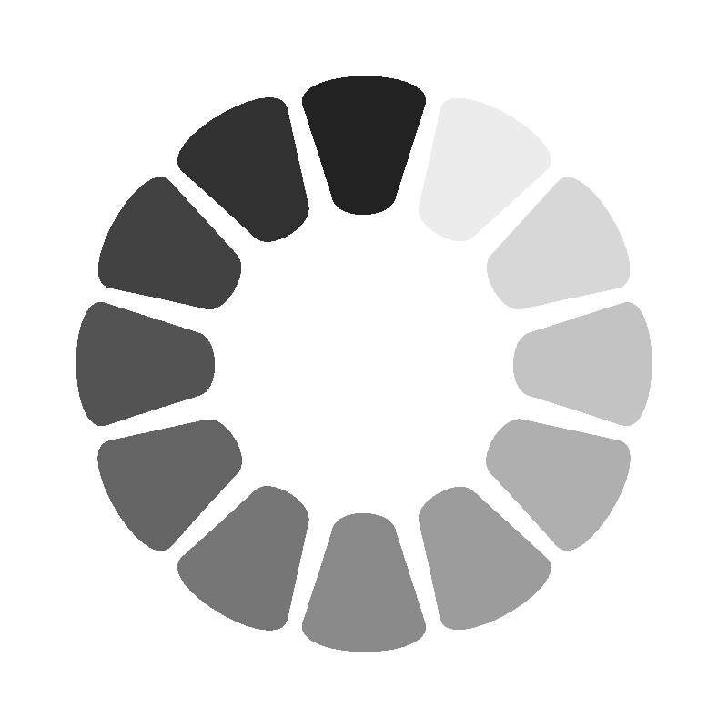

オセロ生成機
v1.1.1
6x6
8x8
10x10
12x12
新しいマッチを作成
マッチを終了
履歴を見る
使い方
リリースノート
意見箱
保存された意見を見る
オフライン版を
ダウンロード
読み込み
書き出す
リセット
コピー
貼り付け
ひっくり返す
初期配置を配置
アドバイス
ダウンロードに不具合が多発したため一時的にダウンロードできなくしています。
閉じる
使い方
基本操作
左のサイドバーから盤のサイズを選択してください。
入力欄にSlackのオセロをコピーしたものを貼り付け、「読み込み」ボタンを押すと盤面が更新されます。
真ん中にあるオセロ盤をクリックすることで色が変わります。
ボタンの機能
書き出す:
現在の盤面データを入力欄に出力します。
リセット:
盤面を初期状態に戻します。
コピー:
入力欄の内容をクリップボードにコピーします。
貼り付け:
クリップボードの内容を入力欄に貼り付けます。
ひっくり返す:
最後に変更したマスを基点にひっくり返し処理を実行します。
初期配置を配置:
盤に初期配置を配置します。
その他の機能
オフライン版をダウンロード:
オフライン版をダウンロードできます。
リリースノート:
最新のリリースノートを表示します。
アドバイス:
現在の盤面に対するアドバイスを表示します。
読むターン数:
アドバイスの深さを調整できます。
マッチ管理
新しいマッチを作成:
新しいマッチを開始します。
マッチを終了:
現在のマッチを終了し、履歴に保存します。
履歴を見る:
過去のマッチ履歴を表示します。
閉じる
リリースノート
リリースノート書くのめんどいからなくても良いよね
閉じる
アドバイス

ここにアドバイスが表示されます。
読むターン数を選択してください
+
1ターン
2ターン
3ターン
4ターン
5ターン
6ターン
7ターン
8ターン
9ターン
10ターン
マッチ履歴
閉じる
意見箱
保存
閉じる
管理者認証
認証
閉じる